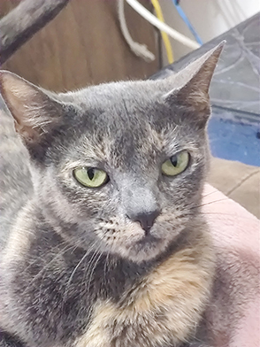
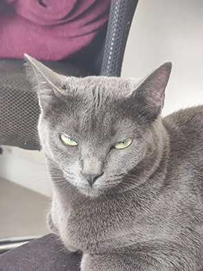

Uma história de garras, ronrons e muito amor
Nascida em um dia ensolarado de 2020, Fiodora chegou em nossas vidas como um furacão de pelos e personalidade. Desde pequena, demonstrou um temperamento forte e independente, conquistando o coração de todos com sua beleza e carisma inigualáveis. Fiodora é a definição de amor e ódio. Um momento ela está ronronando e esfregando-se em suas pernas, demonstrando todo o seu afeto, e no outro, está perseguindo os outros gatos da casa como se fossem seus maiores inimigos. Essa dualidade faz parte de sua essência e nos diverte a cada dia. Apesar de sua natureza selvagem, Fiodora possui um lado maternal surpreendente. Em alguns momentos, ela acolhe os outros gatos como se fossem seus filhotes, cuidando deles com carinho e protegendo-os de qualquer ameaça. Essa combinação de ferocidade e ternura a torna ainda mais fascinante. Uma companheira única Fiodora é muito mais do que apenas um pet, ela é um membro da família. Sua presença alegra nossos dias e nos ensina sobre a importância de aceitar as diferenças e amar incondicionalmente. Características marcantes de Fiodora: Temperamental: Uma verdadeira leoa, sempre pronta para defender seu território. Carinhosa: Quando está de bom humor, Fiodora é a companheira mais amorosa do mundo. Maternal: Adora cuidar dos outros gatos, demonstrando um lado maternal surpreendente. Independente: Fiodora gosta de ter sua liberdade e não se deixa levar por qualquer coisa. Beleza exuberante: Seus pelos macios e seus olhos brilhantes a tornam uma verdadeira diva felina.

Uma alma selvagem em um corpo delicado
Angrboda, com sua pelagem tricolor que lembra escamas, chegou em nossas vidas como um pequeno furacão. Pequena em tamanho, mas grande em personalidade, ela conquistou um espaço especial em nossos corações. Desde o primeiro momento, Angrboda mostrou ser uma gata independente e um tanto arisca. Sua natureza selvagem e seu instinto de caçadora a tornam uma verdadeira guerreira. Mas por trás dessa fachada durona, se esconde um coração cheio de amor, especialmente por sua tutora, Débora. Com Débora, Angrboda revela um lado mais doce e carinhoso. Os dois formam uma dupla inseparável, e a gata demonstra um afeto imenso por sua humana, buscando seu colo para receber carinho e atenção. É como se a presença de Débora fosse um refúgio seguro para essa pequena felina. Uma combinação única de força e fragilidade A pelagem tricolor de Angrboda, que parece escamas, adiciona um toque de mistério à sua personalidade. Seus olhos brilhantes e sua agilidade a tornam uma caçadora nata. No entanto, apesar de sua natureza selvagem, ela é extremamente delicada e precisa de cuidados especiais. Características marcantes de Angrboda: Tricolor e escamosa: Sua pelagem única a torna inconfundível. Arisca e independente: Angrboda gosta de ter seu espaço e não se deixa domesticar facilmente. Carinhosa com Débora: Com sua tutora, ela revela um lado mais doce e protetor. Pequena e magrinha: Seu tamanho compacto contrasta com sua personalidade forte. Caçadora nata: Seus instintos felinos são aguçados e ela adora brincar de caçar. Angrboda é mais do que apenas um pet, ela é uma companheira fiel e uma fonte de inspiração. Sua história nos mostra que mesmo os gatos mais selvagens podem ter um coração mole e que o amor pode transformar qualquer criatura.
Freya
Freya, irmã da feroz Angrboda, é a oposição completa. Enquanto sua irmã é pequena e arisca, Freya é uma verdadeira bola de pelos, grande e gorda, com um apetite insaciável. Mas sua aparência robusta esconde um coração enorme e uma necessidade constante de carinho. Uma amante de humanos Freya adora a companhia dos humanos, especialmente de Daniel, com quem ela tem um vínculo especial. Seja para pedir comida, para receber um abraço ou simplesmente para deitar no colo, Freya sempre busca a proximidade de seus humanos favoritos. Uma relação complexa A relação entre Freya e Angrboda é, no mínimo, interessante. Enquanto as duas são irmãs, suas personalidades são completamente opostas. Freya, com sua natureza dócil e amorosa, se irrita facilmente com a agressividade de Angrboda. Por outro lado, ela nutre um carinho especial por Fiodora, a terceira integrante do trio felino. Características marcantes de Freya: Gorda e fofinha: Freya é uma verdadeira bola de pelos, com curvas que a tornam irresistível. Carente: Ela precisa constantemente de atenção e carinho. Amante de humanos: Freya adora a companhia das pessoas, especialmente de Daniel. Paciente: Apesar de sua necessidade de atenção, Freya é bastante paciente e tolerante. Amiga de Fiodora: As duas gatas têm uma relação especial e costumam brincar juntas. Freya é a prova de que os gatos podem ser tão diferentes quanto as pessoas. Sua personalidade adorável e sua necessidade constante de amor a tornam uma companheira única e inesquecível.
